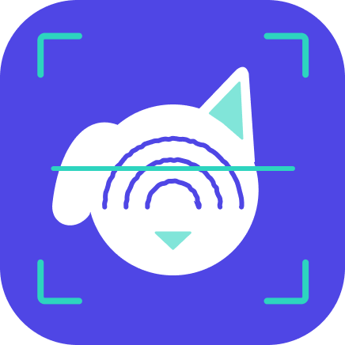

Acesso aos Sistemas Integrados de Saúde Coletiva
Modulo de Atencao Primaria
Ativo
CLARA
Assistente Inteligente
Sistema Clara
Inteligencia Artificial e Assistencia Farmaceutica
Assistente inteligente para consulta em tempo real do estoque de medicamentos da rede municipal (REMUME), protocolos clinicos do Ministerio da Saude (PCDTs) e apoio a tomada de decisao na Atencao Primaria.
Gestao Academica e Territorial
Ativo
CadastraPET
Censo Animal e Biometria
Sistema CadastraPET
Censo Animal, Biometria e Mapeamento Territorial
Plataforma integrada para censo animal, identificação biométrica e mapeamento territorial voltado à vigilância em saúde e controle populacional na rede municipal.